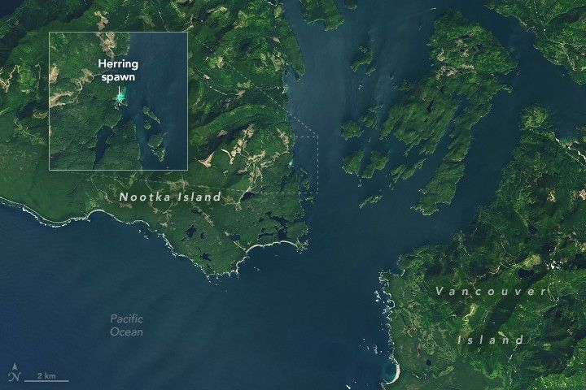

Spawning Spectacle
Every spring, thousands of Pacific herring congregate in shallow, vegetated coastal areas around Vancouver Island in British Columbia, Canada, to spawn. These events brighten the water—often on a large enough scale to be detected by satellites.
One such spectacle was on display late in the 2025 spawning season when the OLI (Operational Land Imager) on Landsat 8 acquired this image on April 27. This eye-catching patch of water appeared along the southeast coast of Nootka Island, just west of Vancouver Island, and was also observed from shore near a fishing lodge.
To spawn, populations of the small, silvery fish move from offshore waters where they feed to sheltered bays and coastal areas. Females produce eggs that stick to kelp, seagrass, and other surfaces. Males release a sperm-containing fluid called milt into the water, giving it a cloudy turquoise look.
The timing of a herring spawning event depends on latitude and other factors, and the change in water color can last several hours to several days. In southern British Columbia, spawning occurs from mid-February through early May, according to Fisheries and Oceans Canada data analyzed by Loïc Dallaire at the University of Victoria in Canada.
Dallaire is using satellite imagery to augment records of past spawning events and streamline future detections. The project is a partnership between the Spectral Remote Sensing Laboratory, led by professor Maycira Costa in the university’s geography department, and the Pacific Salmon Foundation. The effort leverages Landsat satellites’ ability to detect spawns in order to estimate herring activity over larger areas and longer time periods. Records may otherwise be constrained by survey timing, the availability of reports from remote locations, and fisheries priorities.
The Strait of Georgia, located northeast of Vancouver Island, is a productive waterway for herring and a core area for commercial fishing in British Columbia. The fish and their roe are also valuable to First Nations and the marine ecosystem throughout their range, including the region shown in this image. A few dozen spawning events have been recorded in this Nootka Island inlet during the past 70 years, said Dallaire, though it is possible some have been missed.
A fuller picture of the locations of spawning areas and how they might be changing could provide clues to other aspects of the ecosystem. Herring have a strong link to juvenile salmon, he noted. As a forage fish species, Pacific herring are a key food source for salmon and other marine life such as seals and humpback whales.